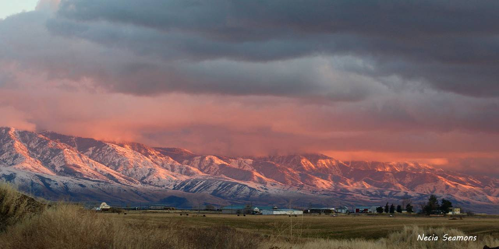
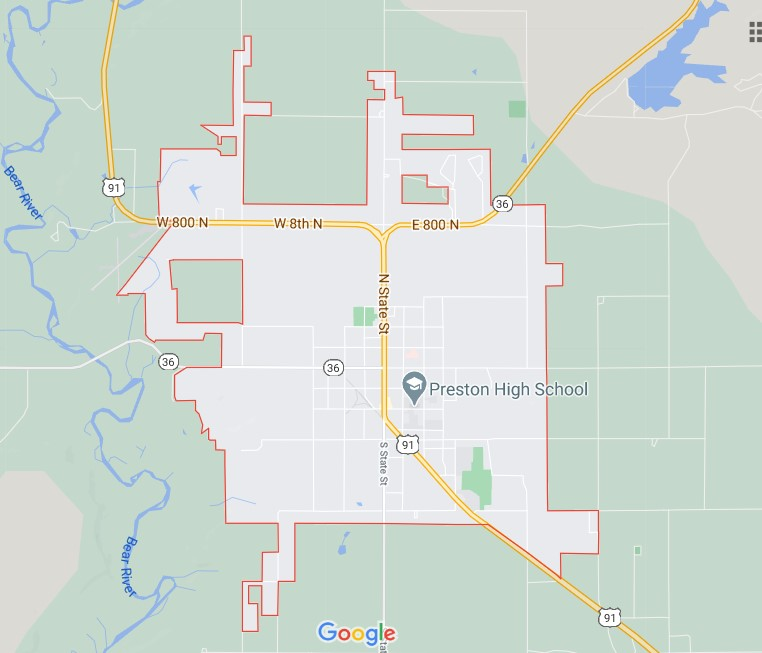

Saturday is Preston Pancakes in the Park! 9:00 a.m. at the city park pavilion.
Temperature Tracker
trustworthy weather tracking today

Weather Summary
Currently:
Temperature: °F
Humidity: %
Wind Speed: mph
Wind Chill: °F
Events this Week
5 Day Forcast
℉
℉
℉
℉
℉
Fall is Here!
By Brad H. R.
Fall is here! It can be stressful with so many holidays coming up, don't let the stress overwhelm you!
Naing the Days Feature by Frederic and Mary Ann Brussat
The autumn equinox marks the arrival of the season of fall, traditionally seen as a period of changes
leading to the dark of winter. In Holidays and Holy Nights, Christopher Hill points out that for Christians
who observe the liturgical year, autumn is actually the beginning of the cycle. In an excerpt, he suggests
that "the dynamics of the fall of the year have the sweep of a great symphony or an epic poem."
That may explain why so many poets have reflected on this season. The Heart of Autumn contains 38 examples
selected by Robert Atwan from such poets as Robert Bly, May Sarton, Carl Sandburg, Robert Penn Warren,
Archibald MacLeish, and others. The excerpt from this book is "Leaves" by William Virgil Davis, a poem that
conveys the mysterious qualities of fall.
What spiritual lessons and practices are suggested by the coming of autumn? Here are three areas for your
meditations. Read
More

Contact Information
70 W Oneida St, Preston, ID 83263
prestontownhall@email.com
(208) 852-1817